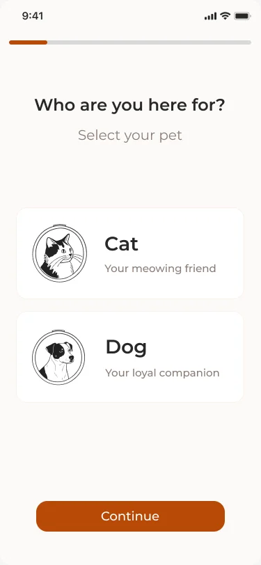
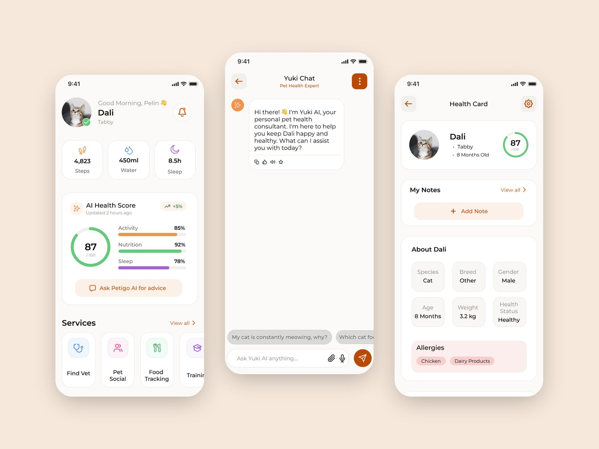
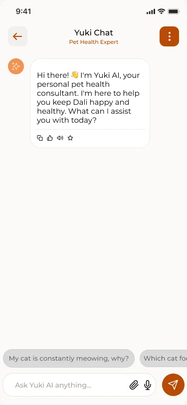
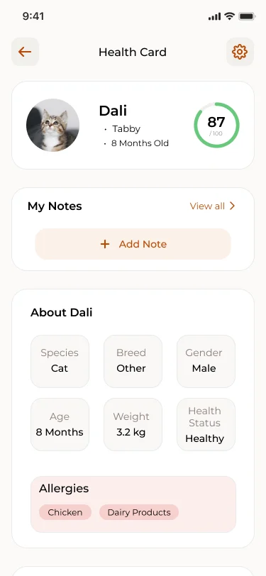
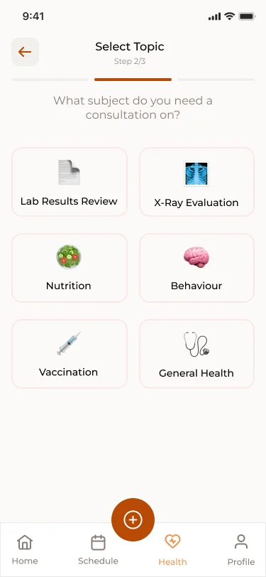

Progressive onboarding
One question per screen. Breed, age and needs filter content from day one.
Case study 01 · April 2025 · Mobile app
An AI-powered pet care assistant that turns scattered health records and anxious guesswork into one calm, trusted place.


One question per screen. Breed, age and needs filter content from day one.

24/7 guidance with quick-reply chips: vet advice in bite-sized steps.

Vaccines and history in one card: the standard record vets asked for.

Topic, then vet, then time slot: booking designed to take under 3 taps.
Lost paper records, missed appointments and online misinformation delay care and leave owners anxious.
Vet interviews showed the real gap is the lack of a standardized pet health history, so the Digital Health Record became the priority.
Personalized onboarding, Yuki the AI assistant, one health record and smart reminders. Vet booking is designed to take under 3 taps.
8 in-depth interviews (35–40 min) with 6 pet owners and 2 vets.
4 pain points, the persona “Anxious Owner Pelin” and a journey map.
User flow, hi-fi screens and a Montserrat-based design system.
Click through the real flows. It runs right here in the page.